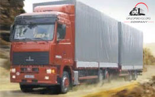

Грузоперевозки Украина
— грузоперевозка по украине цена —
 Грузоперевозки по Украине важная составная часть экономики государства.
Только данный вид транспортного сообщения может обеспечить наилучший обмен товарами между отдельными территориями и регионами, обеспечив их, тем самым,
сырьем, материалами и оборудованием для производства. Профессиональная доставка груза по Украине готовой продукции потребителю позволяет успешно решать важные экономически задачи нашего государства. Грузоперевозки по Украине – это самая массовая бизнес отрасль, которая имеет очень развитую и мощную транспортную систему. Данная отрасль давно заняла и достаточно прочно удерживает самые главные и ведущие позиции в транспортном комплексе Украины и удовлетворяет в полном объеме все потребности населения.
Грузоперевозки по Украине важная составная часть экономики государства.
Только данный вид транспортного сообщения может обеспечить наилучший обмен товарами между отдельными территориями и регионами, обеспечив их, тем самым,
сырьем, материалами и оборудованием для производства. Профессиональная доставка груза по Украине готовой продукции потребителю позволяет успешно решать важные экономически задачи нашего государства. Грузоперевозки по Украине – это самая массовая бизнес отрасль, которая имеет очень развитую и мощную транспортную систему. Данная отрасль давно заняла и достаточно прочно удерживает самые главные и ведущие позиции в транспортном комплексе Украины и удовлетворяет в полном объеме все потребности населения.
 Грузоперевозка Украина использует автомобильный транспорт, который обеспечивает потребности в перевозках различных грузов по стране (66%) и пассажиров (87%). В основном реализуются задачи по перевозке
небольших потоков грузов на короткие расстояния. Это, как правило, связано со
значительно высокой себестоимостью данного вида транспорта и его малой
грузоподъемностью. Но, не смотря на это, автомобили дают возможность доставки
грузов «от двери к двери» без дополнительных затрат на перегрузку, а также использование системы попутные грузоперевозки по Украине. Их
высокая маневренность и достаточная скорость окупает практически все потраченые средства. Поскольку наша страна имеет выгодное экономическое, географическое, а также геополитическое положение, транспортные линии пронизывают практически всю
территорию государства. Парк грузовых автомобилей в Украине составляет
всего 37% .
Грузоперевозка Украина использует автомобильный транспорт, который обеспечивает потребности в перевозках различных грузов по стране (66%) и пассажиров (87%). В основном реализуются задачи по перевозке
небольших потоков грузов на короткие расстояния. Это, как правило, связано со
значительно высокой себестоимостью данного вида транспорта и его малой
грузоподъемностью. Но, не смотря на это, автомобили дают возможность доставки
грузов «от двери к двери» без дополнительных затрат на перегрузку, а также использование системы попутные грузоперевозки по Украине. Их
высокая маневренность и достаточная скорость окупает практически все потраченые средства. Поскольку наша страна имеет выгодное экономическое, географическое, а также геополитическое положение, транспортные линии пронизывают практически всю
территорию государства. Парк грузовых автомобилей в Украине составляет
всего 37% .
 Грузоперевозки цена по Украине зависит от многих факторов. У нас доступны практически все виды транспортировки продукции по оптимальным ценам. Максимально востребованным, популярным и оптимальным видом грузоперевозки, на предмет ценовой политики, всегда была и остается автоперевозка. Автомобили представляют собой главную и наиболее сложную часть подвижного
состава, предназначены для перевозки пассажиров и грузов и, в свою очередь,
подразделяются на основные ценовые категории:
пассажирские - к ним относятся легковые автомобили и автобусы (обеспечение перевозки пассажиров междугородним, внутригородским и
пригородном сообщениях). Грузовые - для перевозки различных грузов, тралы, тягачи, предназначенные для буксировки прицепов, полуприцепов и грузовых емкостей. Специальные - для выполнения различных технических функций, к ним относятся бульдозер, трактор, подъемный кран, пожарна машина, передвижной компрессор, каток и другие.
Грузоперевозки цена по Украине зависит от многих факторов. У нас доступны практически все виды транспортировки продукции по оптимальным ценам. Максимально востребованным, популярным и оптимальным видом грузоперевозки, на предмет ценовой политики, всегда была и остается автоперевозка. Автомобили представляют собой главную и наиболее сложную часть подвижного
состава, предназначены для перевозки пассажиров и грузов и, в свою очередь,
подразделяются на основные ценовые категории:
пассажирские - к ним относятся легковые автомобили и автобусы (обеспечение перевозки пассажиров междугородним, внутригородским и
пригородном сообщениях). Грузовые - для перевозки различных грузов, тралы, тягачи, предназначенные для буксировки прицепов, полуприцепов и грузовых емкостей. Специальные - для выполнения различных технических функций, к ним относятся бульдозер, трактор, подъемный кран, пожарна машина, передвижной компрессор, каток и другие.
Грузоперевозки по Украине диспетчер и его функции. Основное значение — это качество автомобильных дорого, соединяющих Киев и административные центры областей с районными центрами других населенных пунктов. А также с железнодорожными станциями, аэропортами, морскими и речными портами, объектами культурного значенияместам и местами отдыха. Диспетчер нашей логистической транспортной компании всегда поможет выбрать вам качественный и оптимальный маршрут доставки вашего груза по Украине.
Догруз и попутная грузоперевозка по Украине - экономия ваших средств. Несмотря на неблагоприятную экономическую ситуацию, проводится подготовка к строительству через Украину новых транспортных коридоров, которые соединят южную и северную, а также западную и восточную части Европы, что обеспечит расширения торговли с другими государствами и динамичное развитие международных экономических, культурных связей. На данном этапе, вы можете экономить ваши средства с нашей компанией при перевозке грузов по Украине используя систему догруза попутных грузоперевозок. Попробуйте! Зачем арендовать целый автомобиль по Украине и платить больше? Воспользуйтесь нашими услугами грузовое такси Украины с максимально выгодным сервисом грузоперевозок.
Биржа грузоперевозок Украина - это удобно и минимально затратно использовать оптимальный маршрут следования расчитанный и предложенный специалистами профессиональной компании грузоперевозчика. Ввиду того, что автомобильная дорога представляет собой довольно сложную инженерную конструкцию - для непрерывного, безопасного и удобного движения транспортных средств необходимо выбирать оптимальный маршрут и соответствующий требованиям транспорт. В зависимости от технической оснащенности и качества дорог, определяется их способность пропукать грузовой поток по Украине в определённый интервал времени. Такого рода пропусная способность, с учетом перевозки груза с информационной составляющей биржи транспортировок по Украине, автомобильные дороги подразделяются на пять категорий. Чем выше категория дороги, тем, соответственно, больший поток автомобилей она пропускает за определённый промежуток временной составляющей. И тем более качественной и совершенной является в техническом отношении. В зависимости от постоянности и интенсивности движения транспорта, допустимой скорости движения и специфики технических характеристик, Украинская биржа грузоперевозок отлично справляется с поставленной задачей по оптимизации маршрутов движения.
| 01. | Киев — Одесса |
| 02. | Киев — Харьков |
| 03. | Киев — Кривой Рог |
| 04. | Киев — Запорожье |
| 05. | Киев — Львов |
| 06. | Киев — Полтава |
| 07. | Киев — Днепр |
| 08. | Киев — Херсон |
| 09. | Киев — Ровно |
Транспортная логистическая компания Gruzoperevoz.org - основной задачей которой является организация профессиональных грузоперевозок, заслуженно является одним из лучших украинских сервисов, специализирующимся на организации грузоперевозок по Украине.
ЕСЛИ ВАМ НЕОБХОДИМО СДЕЛАТЬ ЗАКАЗ ОТНОСИТЕЛЬНО ГРУЗОПЕРЕВОЗКИ ПО УКРАИНЕ ИЛИ ВОЗНИКЛИ ВОПРОСЫ, СВЯЖИТЕСЬ С ЦЕНТРАЛЬНЫМИ МЕНЕДЖЕРАМИ НАШЕЙ КОМПАНИИ В ЛЮБОЕ УДОБНОЕ ДЛЯ ВАС ВРЕМЯ ПО ВЫШЕУКАЗАННЫМ ТЕЛЕФОНАМ ИЛИ НАПИШИТЕ СООБЩЕНИЕ, ЗАПОЛНИВ УДОБНУЮ ФОРМУ НА САЙТЕ.
-
офис-менеджер
044 530 50 11 -
менеджер
066 257 33 25менеджер
098 721 52 57